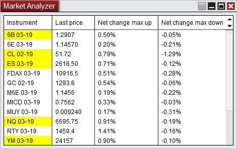

|
<< Click to Display Table of Contents >> 8.0.17.2 |


|
8.0.17.2
|
<< Click to Display Table of Contents >> 8.0.17.2 |
|
8.0.17.0 Release Date
January 28, 2019
Features |
Added Drawing tool tile indicator Indicators Feature # 13389
The Drawing tool tile indicator adds the ability to have a floating tile in the chart that can be customized to quickly access the most commonly used drawing tools.
|
Added Text message via email Share Adapter Options Feature # 13131
The Text message via email feature come preconfigured with typical setting for most major mobile phone providers so you can share item to your mobile phone with SMS or MMS messages.
|
Added Enable color distribution column property Market Analyzer Feature # 13193
This column property will function like a heat map to allow easy identification of where values fall on a scale or compared to one another by distributing a range of colors.
|
Added Go to... ability to chart scroll-bar right click menu Chart Feature # 13367
The Go to... feature will enable you to quickly move to the specified time on a chart.
|
Added a Days until rollover column Market Analyzer Feature # 13293
This column creates an easy visualization of when futures are set to rollover and can be used with an alert to notify when it's time to rollover.
|
Added a property to set an image as a background for the chart Chart Feature # 13240
A custom background image can now be applied to charts to help easily differentiate charts or enhance the visual appeal.
|
Added ability to duplicate a window, including all it's tabs Core Feature # 13399
The ability to duplicate an entire window and all it's tabs greatly reduces the time to recreate a window's set up.
|
Added Hollow Candlestick Chart style Chart Feature # 13435
Hollow candlesticks can color the outline/wicks the up/down bar colors and has a separate color for doji bars, all with a transparent center.
|
Added 'Path' Drawing Tool DrawingTool Feature # 13270
The path drawing tool adds the ability to plot multiple connecting lines without it needing to be a shape.
|
Added Net change max up and down columns Market Analyzer Feature # 13094
These columns will display the max and min the net change has been for the session.
 |
Added T & S trend column Market Analyzer Feature # 13062
This column will show a colored display indicating a history of where orders filled in comparison to the bid and ask price
|
Added Collapse all regions & Expand all regions hot keys for the NinjaScript Editor Hot Key, NinjaScript Editor Feature # 13255
With these hot keys you can quickly expand and collapse all regions to make it easier getting to what you need.
|
Order Flow Volume Profile in composite mode now has Display in margin option Order Flow + Feature # 13316
With the Display in margin option you will be able to plot the profile without overlapping the bars when using composite mode.
|
Added the ability to copy an instrument list Instruments Feature # 13199
Copying an instrument list can be used to quickly duplicate an existing list that you may want to make some adjustments to for a new list.
|
Share email adapter is preconfigured with SMTP settings for common providers Options Feature # 13128
The email share adapted now includes common settings for the most popular providers, making adding a provider even easier.
|
Added historical data support from NinjaTrader servers for Coinbase Coinbase Feature # 13410
With NinjaTrader servers you will be able to access historical data faster and get tick data.
|
Added support for XAGUSD/XAUUSD commodity CFD's Interactive Brokers, Instruments Feature # 13329
Although commodities are not supported, these popular instruments can now be accessed as CFDs and will properly route to the commodity CFD in Traders Workstation.
|
Added support for distributing NinjaScripts that include workspace files NinjaScript 13299
Similar to how templates can be included with NinjaScript packages, now workspaces could be included. |
Added SizeFilter overload for Volumetric bars Order Flow +, NinjaScript Feature # 13274
Now the SizeFilter for Volumetric bars will be accessible with NinjaScript. |
Added Italian language support Regionalization Feature # 13391
You can now configure NinjaTrader for Italian |
Issue# |
Status |
Category |
Comments |
13204 |
Fixed |
Alerts |
Percent offsets did not work as expected |
13327 |
Fixed |
Alerts |
Arithmetic decimal offsets were not allowed |
13442 |
Fixed |
Alerts |
Rearm of On condition reversed was not working as expected when there were multiple conditions |
13404 |
Fixed |
Attach Order To Indicator |
Increasing the quantity of an order attached to an indicator did not inherent attached function |
13217 |
Fixed |
Bars |
Resolved some scenarios where loading bars could result in an error |
13371 |
Fixed |
Basic Entry |
Price selector lost fractional value when deselected |
13209 |
Changed |
Chart |
Send to > Chart feature now sends to the Data Series so the desired chart type/template can be selected |
13233 |
Fixed |
Chart |
Chart templates/duplicate chart tab did not retain fixed left scale of indicator |
13394 |
Fixed |
Chart |
In some scenarios the chart style icon could be incorrect |
13397 |
Fixed |
Chart |
There was no visual cue on the Global Cross Hair which would indicate which chart the mouse cursor was hovering over |
13491 |
Fixed |
Chart, NinjaScript |
Resolved a scenario where custom bar types wouldn't properly scale |
13323 |
Fixed |
Chart Trader |
Resolved some scenarios where Chart Trader could be re-sized incorrectly |
13260 |
Fixed |
Chart Trader, Indicator |
FXTile panel could be overlapped by Chart Trader panel |
13280 |
Fixed |
Chart, DrawingTool |
Switching data series and then removing all drawing objects from a chart could affect the previous data series |
13387 |
Fixed |
Chart, Indicator |
Adding an indicator while NinjaScript was reloading could result in an error |
13286 |
Fixed |
Chart, Strategy |
Strategy could plot on incorrect input series on multi-series chart |
13269 |
Fixed |
Coinbase |
Resolved a scenario that resulted in repeated disconnects and reconnects |
13275 |
Fixed |
Coinbase |
Resolved a scenario that prevented download of more than a week of minute data |
13336 |
Fixed |
Coinbase |
Daylight savings time could prevented data from downloading |
13460 |
Fixed |
Coinbase |
Historical daily bars were time stamped 1 day off |
13334 |
Fixed |
Continuum, CQG |
Resolved a scenario where a time zone setting prevented connecting during daylight savings time change |
13259 |
Changed |
Control Center |
Made Send to support window not modal and added CC to self option |
13284 |
Fixed |
Control Center |
Email support could say the message sent when it did not |
13314 |
Changed |
Control Center |
Updated format of the Help menu |
13258 |
Fixed |
Control Center, NinjaScript |
When more scripts were exported than the size of the window there was no scroll-bar to see the additional scripts |
13313 |
Fixed |
Core |
When having a modal window open then switching programs then going back to NinjaTrader, the modal window would not pull into the front |
13431 |
Fixed |
Core |
Made tool tips more consistent |
13283 |
Fixed |
DrawingTool |
Resolved a scenario where Region highlight could result in an error |
13326 |
Fixed |
DrawingTool, Workspace |
Drawing Object Attached to All charts with Visible unchecked did not retain unchecked setting on relaunch |
13290 |
Changed |
Forex.com |
Updated connection options to always use G2 as that is now the only option from Forex.com |
13297 |
Fixed |
Forex.com |
Resolved a scenario that where a connection loss occurred resulting in a crash |
13297 |
Fixed |
Forex.com, Data |
When connecting a historical gap could appear on chart if using a chart series preset |
13306 |
Fixed |
Forex.com, Chart |
After loading a tick chart then switching to another chart type the Loading text would not remove once complete |
13186 |
Fixed |
Forex.com, NinjaScript |
Resolved a scenario where canceled simulation orders could result in an error |
13243 |
Fixed |
FX Board |
Futures instruments added to the Forex list would get added to the FX Board tiles collection |
13408 |
Fixed |
FX Pro |
If no instrument was selected, open orders would show on the orders grid |
13224 |
Fixed |
FXCM |
Resolved a case where some accounts could not connect |
13298 |
Fixed |
FXCM, Orders |
Orders could be slower than with previous releases |
13252 |
Fixed |
Indicator |
ZigZag could not run on an input series that produced negative values |
13388 |
Fixed |
Indicator |
Candlestick indicator had an error if strength was set to 0 |
13403 |
Fixed |
Indicator |
Typing to select indicator in available list didn't always work |
13423 |
Fixed |
Indicator |
FX Tile error text flashed on while changing to valid instrument |
13433 |
Fixed |
Indicator |
Added text indicating Woodie's CCI panel requires minimum 3 daily bars to calculate if less than 3 are available |
13462 |
Fixed |
Indicator, Chart |
Indicator with IsOverlay=False and DrawOnPricePanel=True would draw objects in indicator panel rather than price panel |
13493 |
Fixed |
Installer |
Reinstall did not recompile as expected |
13487 |
Fixed |
Installer |
A large cache could cause upgrade to take long |
13402 |
Changed |
Instruments |
Addition of 0.000005 as tick size |
13440 |
Fixed |
Instruments, NinjaScript |
Resolved a scenario where updating instruments quickly after rolling over futures resulted in a error |
13386 |
Changed |
Interactive Brokers |
Notification from Traders Workstation no longer send as alerts or errors, which resulted in pop ups |
13422 |
Fixed |
Interactive Brokers |
Resolved a scenario that prevented connecting |
13484 |
Changed |
Interactive Brokers, Level II Window |
For equities, if a market maker ID is not received the selected exchange will display as the market maker |
13468 |
Fixed |
Interactive Brokers, Instruments |
YM 03-19 showed as YM 12-99 |
13502 |
Fixed |
Interactive Brokers, Instruments |
VX 03-19 failed to load |
13425 |
Fixed |
Interactive Brokers, Orders |
Resolved a scenario where part filled logs were duplicated |
13056 |
Changed |
IQFeed |
Supported Client Software version updated to 6.0.1.1 |
13483 |
Fixed |
IQFeed |
A disconnect then reconnect could result in data not resubscribing when using multiple connections |
13300 |
Fixed |
Kinetick |
Resolved a scenario were a reconnect was not attempted after a lost connection |
13481 |
Fixed |
Kinetick |
Disconnecting during a connection loss could result in an error |
13236 |
Fixed |
Kinetick, Workspaces |
Connecting to Kinetick EOD from the 'Get connected' screen would load the default workspace after each open |
13227 |
Fixed |
Licensing |
Resolved a scenario where settings didn't fully update when changing licenses |
13333 |
Fixed |
Licensing |
Vendor licensing allowed blank name which couldn't be managed |
13369 |
Changed |
Localization |
Refined Simplified Chinese Mandarin localization |
13405 |
Fixed |
Localization, Instruments |
Instrument type in instrument manager could display incorrectly |
13449 |
Fixed |
Localization, Log |
English logs could show localized resources |
13234 |
Fixed |
Market Analyzer |
Label cell did not work properly after drag and drop when non-text columns were applied |
13291 |
Fixed |
Market Analyzer |
Resolved some rendering errors for Chart - Net change |
13467 |
Fixed |
Market Analyzer, NinjaScript |
Resolved a scenario where a custom column was not terminated after the window was closed |
13475 |
Fixed |
Market Analyzer, Playback |
Chart - Net Change did not plot when connected to Playback |
13365 |
Fixed |
NinjaScript |
Resolved a scenario where accessing the Strategies window repeatedly resulted in an error |
13418 |
Fixed |
NinjaScript |
BarsRequest could return incorrect bars if Global Merge Policy was different from BarsRequest Merge Policy |
13428 |
Changed |
NinjaScript |
Monte Carlo simulation is now multi-threaded |
13231 |
Fixed |
NinjaScript Editor |
Resolved links for compile errors that went to pages with no documentation |
13235 |
Fixed |
NinjaScript, Chart |
Resolved a scenario where auto scaling a chart could result in an error |
13488 |
Fixed |
NinjaScript, Chart |
Draw.TextFixed in sub panel moved on time axis scroll |
13096 |
Fixed |
NinjaScript, DrawingTool |
Updating the end anchor from NinjaScript could fail on multi-series chart |
13432 |
Fixed |
NinjaScript, DrawingTool |
Resolved a scenario where rendering a rectangle resulted in an error |
13497 |
Fixed |
NinjaScript, Workspaces |
When restoring a workspace, OnWindowRestored() was called before OnWindowCreated |
13441 |
Fixed |
Options, Data |
Tick filtering did not work as expected |
13245 |
Changed |
Order Flow + |
Updated Order Flow Market Depth Map default settings to improve visualization |
13261 |
Fixed |
Order Flow + |
Order Flow Volume Profile on a tick chart could cause a rendering error |
13263 |
Fixed |
Order Flow + |
In some scenarios the Order Flow Volume Profile's Extended naked POC extended when it shouldn't have |
13276 |
Fixed |
Order Flow + |
Order Flow Volume Profile type price plotted some letters too early on minute resolution |
13277 |
Fixed |
Order Flow + |
Order Flow+ Volume Profile Composite did not plot with certain settings |
13289 |
Fixed |
Order Flow + |
Order Flow Volume Profile added addition line labels |
13308 |
Fixed |
Order Flow + |
Order Flow Volume Profile could plot monthly profiles a day early |
13381 |
Fixed |
Order Flow + |
In some scenarios Order Flow Volume Profile price charts could show the C for close out of line |
13400 |
Fixed |
Order Flow + |
Order Flow Market Depth Map extend last known value printed incorrectly in fast moving markets |
13470 |
Fixed |
Order Flow + |
Volumetric bars could return different values in code vs chart if a gap in price occurred |
13406 |
Fixed |
Order Flow +, Chart |
Resolved a scenario where chart became unresponsive after switching the instrument |
13430 |
Fixed |
Order Flow +, Playback |
Order Flow Cumulative Delta could see discrepancies when reloaded in Playback |
13377 |
Fixed |
Order Flow +, Tick Replay |
Order Flow + Volume Profile indicator plot was displaced when used with Tick Replay |
13364 |
Fixed |
Orders |
Orders tab would not update Quantity when a strategy order was submitted to secondary series |
13420 |
Fixed |
Orders |
GTD orders were not handled as expected |
13376 |
Changed |
Output Window |
Added Copy to right click menu of the NinjaScript Output window |
13287 |
Fixed |
Playback |
Rewinding Playback with an alert attached to a multi-series indicator resulted in an error |
13455 |
Fixed |
Playback |
Playback could get stuck when daylight savings ends with some time zones |
13498 |
Fixed |
Playback |
Controller end date could be before start date in some scenarios |
13215 |
Fixed |
Simulator, Trade Performance |
Simulator MAE/MFE/ETD could change after end of day |
13393 |
Fixed |
Strategy |
In some scenarios draw methods would not plot if the strategy was applied in a chart then enabled in the Control Center |
13417 |
Fixed |
Strategy |
Resolved a scenario that resulted in a double canceling of an order which then caused a crash |
13451 |
Fixed |
Strategy |
When running 2 strategies on the same instrument, if 1 was disabled the 2nd stopped updating it's PnL values on the Strategies tab |
13463 |
Fixed |
Strategy |
Calling EnterLong() and then ExitLongLimit() could result in an error |
13192 |
Fixed |
Strategy Analyzer |
When loading an Optimization from a log, Summary results did not match the Results grid, when using High Order Fill Resolution |
13218 |
Fixed |
Strategy Analyzer |
Sending a log from a backtest to an already open NinjaScript Editor resulted in an error |
13324 |
Fixed |
Strategy Analyzer |
Adding Results Columns to an Optimization caused column misalignment |
13379 |
Fixed |
Strategy Analyzer |
Walk forward optimization Start/End column disappeared when setting display to points |
13409 |
Fixed |
Strategy Analyzer |
When switching between multiple instruments results of a strategy that draws text an error could occur |
13411 |
Fixed |
Strategy Builder |
Setting VolumeUpDown as Input in Momentum caused a duplicate instantiation |
13494 |
Fixed |
Strategy Builder |
Condition Builder showed some indicators that are not available in the Condition Builder |
13303 |
Fixed |
Strategy, Orders |
Resolved a scenario where specific settings resulted a simulated stop became a real stop when the strategy transitioned to real time |
13295 |
Fixed |
Strategy, Templates |
Running an Optimization then setting a template was not working as expected |
13448 |
Fixed |
Strategy, Templates |
Strategies applied on the Strategies tab of the Control Center could change renko brick size when enabled, if a strategy template exists |
13282 |
Fixed |
SuperDOM |
Column width was not maintained after a restart |
13474 |
Fixed |
SuperDOM, ATM Strategies |
Resolved a scenario where the APQ column could get an error if using an ATM in a fast moving market |
13250 |
Fixed |
SuperDOM, NinjaScript |
Resolved a scenario where reloading NinjaScripts could get stuck |
13288 |
Fixed |
TD Ameritrade |
Resolved a scenario where an additional day of data would download unexpectedly |
13472 |
Fixed |
TD Ameritrade, Chart |
Some time zones could prevent charts from updating |
13419 |
Fixed |
Trade Performance |
Performance analysis grid on weekly period during holiday could display incorrectly |
13256 |
Fixed |
Workspaces |
Switching between workspaces that had a data box caused the data box to become blank |
13438 |
Fixed |
Workspaces |
Resolved a scenario where saving a workspace with same name as a previously saved workspace, they were combined |
February 6, 2019
Issue # |
Status |
Category |
Comments |
13533 |
Fixed |
Order Flow + |
Order Flow Market Depth Map did not plot above last price |
13522 |
Fixed |
NinjaScript, DrawingTool |
Renamed Path NinjaScript access to PathTool to prevent potential compile conflicts |
13537 |
Fixed |
Localization |
When NinjaTrader was set to ‘Spanish’, mail to support did not work as intended |
13546 |
Fixed |
NinjaScript |
References to an older version of Newtonsoft would result in an error |
February 14, 2019
Issue # |
Status |
Category |
Comments |
13560 |
Fixed |
Control Center, Playback |
Resolved account handling for a few scenarios |
135595 |
Changed |
DrawingTool |
Improved Path tool double click to end function |